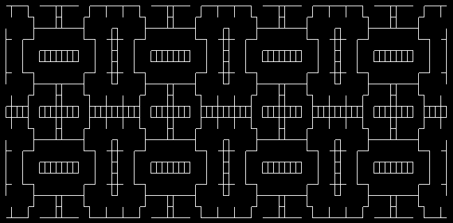
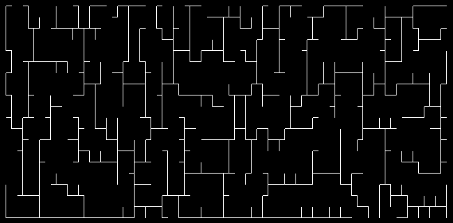
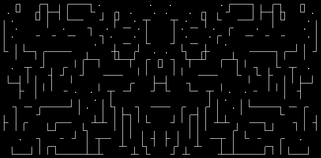

forma
2D grid shape generation in lua

This package is intended for the generation and manipulation of shapes on a two dimensional grid or lattice. It came about as part of experiments in making roguelike games. forma is therefore particularly suited for the generation of roguelike environments.
While there are methods for the generation and manipulation of primitive shapes (rectangles, circle rasters etc.) The more interesting shapes are, for the most part, generated by Cellular Automata (CA). A basic CA implementation is provided that can generate shapes such as the classic 4-5 rule 'cave' systems:
More complicated structures can be formed by combining different CA rule sets with different neighbourhoods (including Moore, von Neumann and more). For example a 'corridor' structure:

On top of the CA implementation, there are a great deal of methods for the manipulation of these 2D patterns. From basic operations such as pattern addition or subtraction, enlargement and reflection:

To more complication operations such as sub-pattern finding by flood-filling, Voronoi tessellation of patterns, hull finding or Binary Space Partitioning. All operations being defined on various choices of 2D neighbourhoods.
Warning
The master branch is in active development. API breaking changes may occasionally occour.
Requirements
A lua@5.1 or luajit installation should be all that is required to use this module. See the examples folder for some demonstration.
The test suite requires - LuaCov - luaunit
Generating the documentation requires - LDoc
Running examples
The examples require that the forma/ directory is in the lua path. The easiest
way to try the examples is to run them from the root directory of this repo. For
example
lua examples/game_of_life.lua
Generating documentation
Documentation is hosted here.
Simply running
ldoc --output contents --dir docs .
in the root directory should generate all the required pages.
Testing
Unit tests are provided for some methods with the luaunit framework, coverage is tested using LuaCov. To run the tests use
./run_tests.sh
A coverage report in the LuaCov format will be output at
luacov.report.out